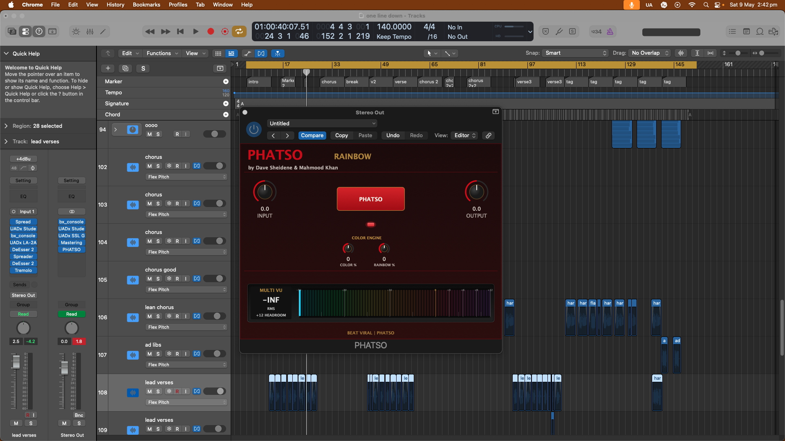

RAINBOW
Full-spectrum circuit color. The complete PHATSO palette in one insert.
Seven simple tone plugins
The Sound of Colors
PHATSO makes digital tracks feel bigger, richer, wider, and more finished. Drop a color on a track or mix bus and get subtle analog-style tone without EQ curves, compressor settings, or preset hunting.
What it does
Use PHATSO when a vocal, beat, instrument, or mix bus feels a little flat, thin, cold, or unfinished.
Choose a color for weight, shine, warmth, smoothness, edge, or full-spectrum polish. The default sound is subtle; push the controls when you want more.
It is not trying to replace EQ or compression. It is the tone and feeling of running sound through colorful studio electronics.
Circuit color, not a channel strip
PHATSO turns subtle electronics fingerprints into a simple color engine. Each plugin is built around a different blend of line-stage tone, transformer weight, tube glow, tape density, console polish, and controlled harmonic movement.
Full-spectrum circuit color. The complete PHATSO palette in one insert.
Transformer weight, low-mid authority, and record-console density.
Forward clarity, clean edge, and open detail without harshness.
Smooth tube-style gloss, soft top, and expensive middle.
Tape and electronics glow. Warmth without obvious wobble or squeeze.
Modern console polish. Tight, shiny, controlled, and finished.
Darker saturation color. Weight, shadow, and attitude.
The PHATSO idea
A calibrated analog-style lift and circuit-color density, designed to feel bigger without breaking gain staging.
Real session proof
Built to sit on real tracks, real buses, and real sessions. One insert, one big button, and a circuit-color engine designed for fast decisions.

Intro launch
Seven plugins. One circuit-color palette.
Buy now Checkout link will be connected when the store page is live.Support & refunds
Need help with PHATSO? Email mahmoodkhanteam@gmail.com and include your order email, operating system, DAW, and a short description of the issue.
PHATSO purchases sold through ClickBank follow a 60-day unconditional refund policy.
For full details, visit the Support and Refund Policy pages.